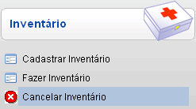
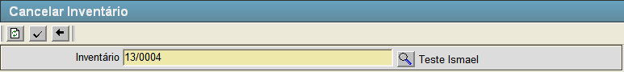
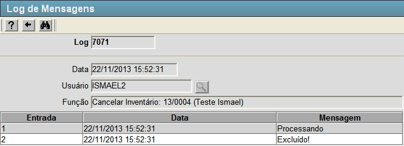

Cancelar Inventário [ Voltar ]Utilize esta tela para cancelar inventários criados no sistema.Para acessá-lo, vá ao menu "Estoque - Inventário" na tela inicial e clique em "Cancelar Inventário". 
Após clicar no formulário, o sistema abrirá a seguinte tela: 
Esta
tela já vem carregada com o código do último inventário que foi criado. Siga os passos
abaixo para cancelar um inventário. 1º Passo: informe o código do inventário que deseja cancelar. Clique no botão  [Pesquisar] para selecioná-lo por meio de uma listagem contendo todos os inventários cadastrados. [Pesquisar] para selecioná-lo por meio de uma listagem contendo todos os inventários cadastrados.2º Passo: clique no botão  para confirmar o cancelamento do inventário. Após clicar neste botão você será redirecionado para a tela abaixo. para confirmar o cancelamento do inventário. Após clicar neste botão você será redirecionado para a tela abaixo. Nesta tela é confirmada a exclusão do inventário e os logs de atividade que ocorreram. |